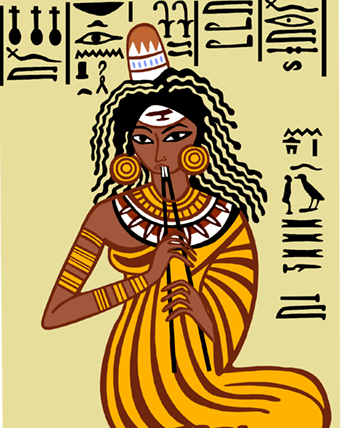

Слово “музыка” в переводе с греческого означает “искусство муз”. Музыка – это вид искусства. У каждого искусства имеется свой язык: живопись говорит с людьми при помощи красок, цветов и линий, литература – при помощи слова, а музыка – с помощью звуков. В мир музыки человек погружается с детства. Музыка оказывает большое влияние на человека. Совсем еще маленький ребенок может вдруг заплакать под грустную мелодию и засмеяться под веселую, или весело запрыгать, хотя он еще не знает, что такое танец.
Музыка в жизни людей
Музыка в жизни человечества играла и играет одну из важнейших ролей. Даже первобытные люди уже понимали, что такое музыка и учились издавать музыкальные звуки используя полые трубочки тростника или пустые стволы деревьев. Значит уже тогда музыка чем-то привлекала человека. С веками это притяжение только усиливалось.Можно сказать, что музыка – это прекрасно, а тяга к прекрасному, к вечной гармонии заложена в человеке изначально, от природы. Но мне кажется, что музыка дает нам эмоциональную разрядку прежде всего.
История музыкальных инструментов
~
Современные музыкальные инструменты
~
Много ли вы знаете о музыке? Кем вы себя считаете в отношении музыки?
